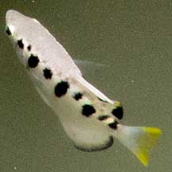
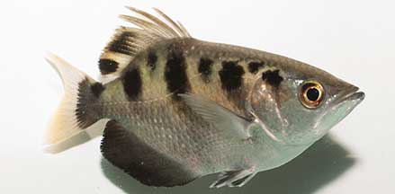

|
|
| fishes text index | photo index |
| Phylum Chordata > Subphylum Vertebrata > fishes > Family Toxotidae |
| Spotted
archerfish Toxotes chatareus Family Toxotidae updated Oct 2020 Where seen? It is not seen as often as Banded archerfishes, but sometimes seen together with these. Under jetties, bridges in streams near mangroves. Features: About 20cm, to about 40cm long. Smaller black spots between the broad black bands. Sometimes also called the Seven-spot archerfish. From above, their eyes have a golden sheen. Banded archerfishes lack these black spots and their eyes don't have the golden sheen. |
 Changi Jetty, Dec 09 |
 Sungei Buloh Wetland Reserve, Feb 05 |
| What does it eat? The Spotted
archerfish feeds on floating titbits including insects and vegetation,
as well as crustaceans and small fishes. More about the archerfishes' infamous ability to shoot down insects. Spotted babies: A female Spotted archerfish can produce lots of floating eggs, 20,000-150,000 of them. Human uses: Sometimes taken by anglers and considered good eating. Sold fresh in markets. Also taken for the live aquarium trade. |
| Spotted archerfishes on Singapore shores |
On wildsingapore
flickr
|
| Other sightings on Singapore shores |
Links
References
|